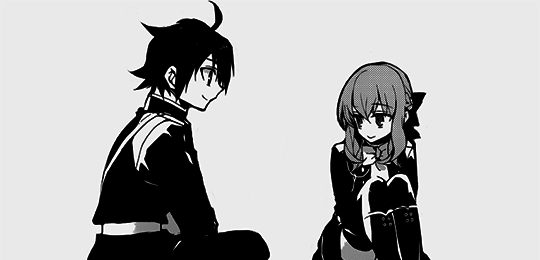

Finished today, what a gem, it has many generic elements
but uses them in an ingenious way to make the plot interesting and even somewhat dark, no joke,
i felt watching anime for
the first time, delighted with all the characters, it may seem yaoi
but it is only suggestion through family love for the fanservice.
recommended.
